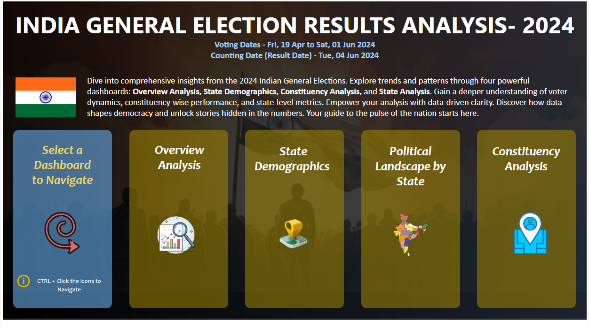
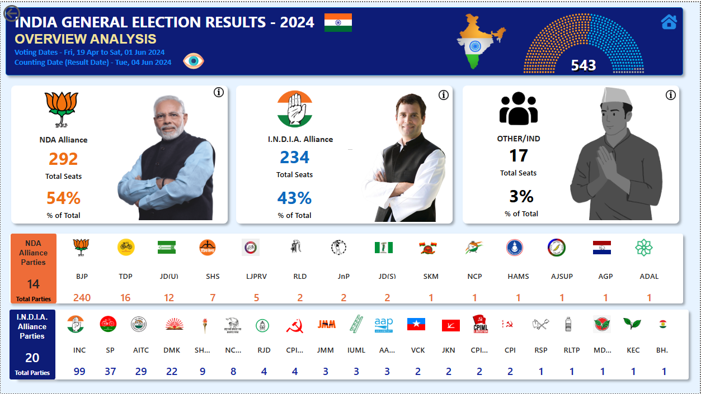
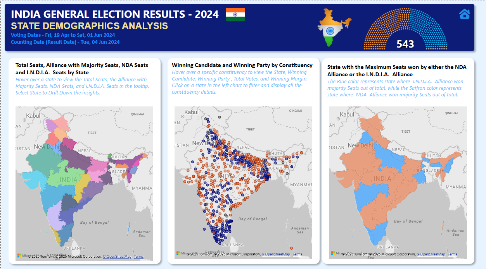
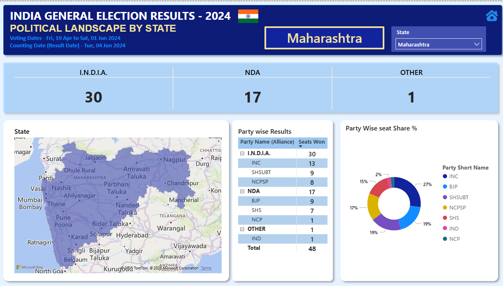
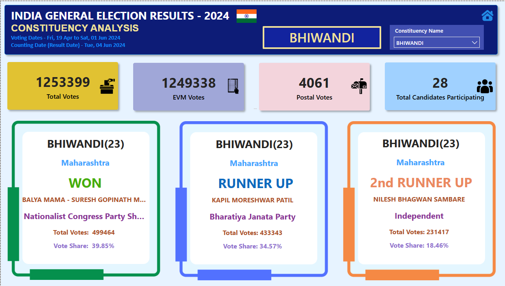

⬅ Back
India Election 2024 Dashboard
Power BI
Below image shows the India General Election Results Analysis - 2024 Landing Page by which user can navigate through different types of Analysis by pressing CTRL+Click on individual icons.

Overview Analysis – Total 543 Seats
The below image provides a comprehensive overview of how all 543 parliamentary seats are distributed among the major alliances and other parties.
🔍 Key Highlights
- Seat Share by Alliance: the total seats held by the NDA Alliance, the I.N.D.I.A. Alliance, and Other Parties.
- ercentage & Numbers: Each alliance’s share is represented both in percentage and actual seat count, giving a clear proportional comparison.
🎯 Purpose
This visual provides a high-level snapshot of the election results, making it easy to identify which alliances and parties dominate the parliament and how the political landscape is shaped.

State Demographics Analysis
In the State Demographics Analysis, It features three dynamic maps, each highlighting a different aspect of the election:
-
Seat Distribution Map -
This map displays the number of parliamentary or assembly seats in each state.
💡 How It Works
Each state shows the total seat count.
Hovering over a state reveals:
- Alliance-wise seat distribution
- Total Seats in the state
- Winning Alliance for that state
🎯 Purpose
This visualization helps understand both the scale and political leaning of each state by showing how many seats are available and which alliance has secured them.
-
Alliance Bubble Map -
This map uses colored bubbles to visually represent the performance of the two major alliances:
-
🟠 Orange Bubbles → NDA Alliance
🔵 Blue Bubbles → I.N.D.I.A. Alliance
💡 How It Works
Each bubble is placed on the state constituency where the winning candidate belongs. Hovering over a bubble displays:
- State & Constituency Name
- Winning Candidate’s Name
- Total Votes Gained by the winning candidate
- Winning Margin (difference between first and second place)
- Party Name of the winning candidate
🎯 Purpose
This visualization allows users to instantly compare the spread and strength of each alliance across the map, making it easy to identify strongholds, close contests, and regions of dominance.
-
State-wise Alliance Map -
This map shows each state colored according to the winning alliance.
-
🟧 Light Orange → NDA Alliance
🟦 Light Blue → I.N.D.I.A. Alliance
💡 How It Works
Each state is filled with a color based on which alliance won the majority seats in that state.
Hovering over a state displays:
- State Name
- Winning Alliance (NDA or I.N.D.I.A., shown with the legend color)
🎯 Purpose
This visualization provides a clear overall picture of which alliances dominate different regions of India, making it easy to see regional patterns and areas of political influence at a glance.

Political Landscape by State
The third section offers a State-level deep dive. A dropdown menu lets the user select a specific state — for example, Maharashtra. Upon selection,
the state is highlighted on the map, and detailed party-wise results are displayed. Parties are organized under their respective alliances,
showing exactly how many seats each secured. Alongside this table, a donut chart illustrates the percentage share of seats for each party in that state,
making it easy to see political dominance and competition at a glance
Overall, this analysis dashboard blends visual storytelling with political data — transforming complex election numbers into a clear, interactive,
and insightful experience for anyone interested in understanding India’s electoral landscape.

Constituency Analysis
The Constituency Analysis page offers a detailed breakdown of election results for any chosen constituency, allowing viewers to explore outcomes at the micro level.
At the top, a dropdown selector enables the user to pick the desired constituency from the complete list. Once selected, the page dynamically updates to display:
Total Votes polled in the constituency.
EVM Votes (cast through Electronic Voting Machines)
Postal Votes(received through the postal ballot system).
The Number of Candidates contesting from the selected constituency.
Beneath the summary section, three dedicated result cards present the top performers:
- Winner’s Card – Displays the winning candidate’s name, party affiliation, total votes received, and vote share percentage.
- Runner-Up’s Card – Lists the second-highest vote-getter with the same details for easy comparison.
- Second Runner-Up’s Card – Highlights the third-place candidate with complete voting statistics.
This layout ensures clear visual hierarchy — important details like the winner’s name and party stand out, while supporting statistics remain accessible for deeper analysis.
Users can quickly gauge vote margins, party performance, and competitiveness of the race in each constituency.
